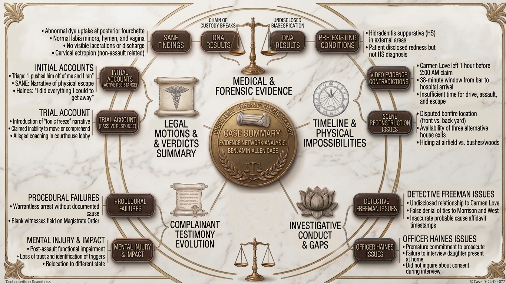

An Edifice of Lies
“A good prosecutor can make an innocent man look guilty. A great prosecutor never has to.”

Key Players & Roles
The people at the center of this case did not meet as strangers. Several relationships existed before the accusation was made, and those pre-existing connections shaped who was investigated, who was interviewed, and who was protected.
Benjamin Allen
Defendant
A military veteran and father living in Lee County.
He had no prior relationship with Lauren Deal beyond a brief social connection through his ex-wife.
He was present at Schooly’s bar on the night in question.
He lost employment, housing stability, access to family, and years of his life to a prosecution built on a record that consistently contradicted the charge.
He refused the extortion attempt. He refused the ADA’s plea deal that came with a threat.
This man is the real victim in this case.
Lauren Deal
Accuser
The primary complainant.
Her initial police statements diverged materially from her trial testimony.
Multiple claimed facts—running through pitch-black woods, hiding behind trees, fleeing through briars—are physically inconsistent with the documented terrain, the recorded lunar conditions (approximately 70% illumination), and the scene’s layout.
Her testimony evolved in ways that tracked prosecutorial framing rather than prior statements. She claimed a connection to Allen through his ex-wife.
Her social circle includes Joel Kelly, whose daughter was her best friend. Joel Kelly sent the extortion messages ($150,000 demand to make the case “go away”).
Detective Steve Freeman
Lead Investigator
Perjury & Fabrication — Altered witness statements in official documents, contradicting recorded conversations available to the defense.
False Probable Cause — Recast Carmen Love’s initial exculpatory statement into one supporting probable cause, directly contradicting witness LD’s account.
Suppression of Evidence — Withheld Love’s original recorded statement, which was favorable to the defense.
Undisclosed Conflict of Interest — Failed to disclose a familial relationship with Love, a key witness who accompanied Deal to the bar that night.
Impossible Case Chronology — Assigned himself to the case before the factual basis for escalation existed, contradicting Officer Haines’s own timeline.
ADA Tiffany Bartholomew
Lead Prosecutor
The Assistant District Attorney who prosecuted the case.
Accused of witness coaching, misrepresenting evidence, violating judicial instructions on the conditional admission of evidence (N.C. R. Evid. 104(b)), withholding the balance of exhibits under the rule of completeness (N.C. R. Evid. 106), and constructing an unsupported “position of trust” aggravating factor.
Deal’s speech register and substantive framing shifted materially between law-enforcement interviews and trial—changes that aligned with Bartholomew’s litigation strategy.
Known for underhanded tactics and for receiving special treatment in Lee County courtrooms.
Carmen Love
Key Witness / Freeman’s Relative
Deal’s cousin. Present at the bar that night with Deal.
Her initial recorded statement to Freeman—her relative—did not identify Allen by name and contradicted the narrative later advanced in the investigation.
Freeman claimed to have used that interview to establish probable cause, despite its exculpatory content.
Love’s later interviews matched or even exceeded the narrative engineering of the prosecution’s account.
The two uninterviewed witnesses at the scene—James Morrison (Love’s boyfriend) and Peter West III (father works in the Lee County Sheriff’s Office)—were never called, which means every account from within that evening’s group was filtered through people with undisclosed connections to the investigator.
Officer Isaac Haines
Initial Responding Officer
Conducted the first interview with Lauren Deal.
Testified his role was fact-finding to determine if the case warranted a detective assignment, creating a timeline contradiction since Freeman testified he had already been notified about a sexual assault allegation before the interview with Deal had even begun.
Stated the role of himself and Freeman as: “to prove that he (Allen) is guilty.”
Got promoted to Detective after this case.
Joseph DeMarco
Eyewitness
Present at Schooly’s bar and at Allen’s residence. Picked up Deal after the alleged incident.
Fear and intimidation initially led him to lie about events, such as picking Deal up on the road. They both had different stories about that event.
His later (missing) statement contradicts Deal’s trial narrative on multiple points.
Steven Happel
Eyewitness
Present at the bar and residence.
Testimony provides an alternative timeline and contradicts Deal’s claims about physical contact and behavior.
His testimony matches what is on video, unlike Deal’s.
Joel Kelly
Third Party with Financial Motive
Sent the $150,000 extortion demand in text messages to Allen.
Kelly’s daughter was one of Deal’s best friends. Another of Deal’s best friends, Pamella Kells, worked for Joel Kelly.
He was embedded in the same social network as Deal and shared overlapping connections with individuals who had reason to fabricate or amplify the allegation.
The extortion contact preceded the formal complaint, establishing a financial motive that the investigation did not adequately explore.
James Morrison & Peter West
Missing Witnesses
Both were present at Schooly’s bar on the night in question. Neither was interviewed by investigators.
Morrison was Carmen Love’s boyfriend, placing him within her direct social circle—and therefore within Freeman’s undisclosed network.
West’s father works at the Sheriff’s Office and signed Allen’s release from jail.
Their unrecorded observations of Deal’s behavior, apparent intoxication, and movements that evening would have been directly material to the credibility of the complaint.
Their absence from the investigative record is not explained.
Jolynda Adcock
Personal Antagonist
Demonstrated long-standing personal animosity toward Allen.
Sexually exploited Allen’s ex-wife’s documented mental illness.
Stated explicitly that “it didn’t matter whether Mr. Allen was innocent” due to the Sheriff’s Department connections available to the complainant’s circle.
That statement is one of the most direct documentary records in this archive of how the structural environment around the case was understood by those within it.
The implausible and changing stories are explained in one line.
{kind=link}
Key Relationships & Hidden Connections
- • Detective Freeman ↔ Carmen Love (Family)
- • Detective Freeman ↔ James Morrison (Love's boyfriend)
- • Detective Freeman ↔ Peter West III (Colleague's son)
- • These relationships were hidden from court
- • James Morrison (Love's boyfriend)
- • Peter West III - Father works in the Sheriff's Office
- • Neutral bartenders
- Their evidence would correspond to the video which is the opposite of the official narrative.

Select image to view full resolution

Select image to view full resolution

Select image to view full resolution

Select image to view full resolution

Select image to view full resolution